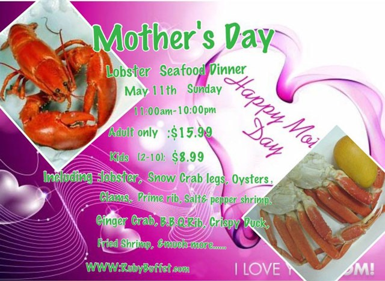

Who do not want to talk as well. I do not want involved. I do not want to meet. But, there is no escape there is also work and socializing. Do not you feel that?
The reason I think that there is a variety to each of its people, but if accumulated stress in that you are in such a state, we need to improve if the is a pain.
We are pleased to introduce is a hint that lead to improvement in when you do not want to talk with anyone.
Eliminate the vague anxiety! Five of improvement when the "do not want to talk to anyone."
Sponsoring
Face While can face
Try Internet search
for "I do not want to talk to anyone." The majority of the search results is the article about depression.
Feeling that I do not want to talk with anyone is immediately, directly linked to depression. It does not mean that, but there is a possibility to come related matters. Is the point that should be considered in the sense that.
Since it has become also need help of time and people in recovery, it is becoming difficult to think becomes when it comes to depressive symptoms in a state where the unconscious region of the brain stops functioning, opposite the one that can face the cause before this does not happen it try it is important.
However, there is no need to think deeply deeply stuffed with roots. Try to try to ask to lightly himself as "Why wonder if had thought that way." "I wonder What things that caused?".
If the cause of the hit is found is the improvement to a step forward just it. Also, stop to think immediately if you feel Do not thoughtful, at a time performs a diversion let's run repeatedly to try to approach again.
And the people that horse is fit, rise in the story that fits
Person everyone people that horse is fit, we have do not fit a person is. To improve the feeling that I do not want to talk to drastic is the best way is possible to eliminate stress by talking to people.
And people who fit the horse for that, it is very important that the rise in the topic that fits.
The man is said to have five values roughly. Five that is the intellect, society, money, family and body. To know their own values, but to interact grasp the values of the other party.
The notice to the values of their own, let's question to himself as "What is the thing that is most important in life."
If we were a similar question to the other party only opponent of the values also found in you may, but direct, "What do you want to After that there is only after 24 hours?" If that is hesitation, such as a chat even to try to hear in the format is one of the way.
Also, let's also recognize that you are looking for people that horse is fit on a daily basis.
Stress is a small factor stacked - day-to-day liquidation of stress
Stress is a stack of small factors. And going to the difficult things that treats it increased to is my own way of thinking. Negative thinking and left-flowed mind is going to give nutrition to stress.
That's why, stress is let's put a habit of going to eliminate one by one to one small.
Also it might be a good idea to perform "stress every day liquidation" that does not carry over the stress in the next day as one of the method. The "stress day-to-day liquidation," it is a good idea to try to take advantage of the notes and diary.
Notes or diary is a set on the second page. Today on the right side of the notebook will continue to write the day feeling stress. In this case, discharging the stress by writing to this notebook and diary, please recognize strongly that you do not carry over to the next day.
And let's scissors a break if so long. During the break, it is important to relax from the body by, for example, gymnastics. We go to switch the mind while using the body.
And if can relax on the left side Let's write a remedy of my own stress you feel today. Notes at this time is that it does not become a negative thinking. We will write the heart of Action in positive thinking.
It is also one of the further effective utilization of yourself to look back After the notes have accumulated again reaffirmed and fall easy to factor in negative thinking.
And that there is no ever in keyword
Because it does not matter in sports and entertainment, it is a good idea to try working on things "have never done" until now. In that case, it is also recommended to try to belong, such as to a whole new circle.
Take advantage of, such as the Internet is also effective, but it is also important to try to join the circle, such as contact is between people.
It is such as the greeting at the first meeting is the basic communication, or feel the freshness that reminds me of the basics, you will be able to reflect on their own until now.
In was if long-lasting is a fine, but it does not have to be long-lasting. If the cost to the preparation it takes is you need to consider the cost, but it does not cause the only chemical reaction by interest experience. It is important to try to go to aggressively.
To respect yourself you do not want to talk
Who not only kill and press the feeling that I do not want to talk as well, perhaps even better try to respect. However, care must be taken so different from the thing you do not face each other and that the cause of respect.
In addition, it is also important to be aware of the fact that the other party is present is to communicate with people.
To show the "attitude that I do not want to talk" in a scene, such as placing a worry to a colleague of the family and the company does not could lead to malfunction of communication. Let's find a way to take advantage of one of the time.
For example, on a business trip at the time thinking about work or the way home I not go home and so spend in hotels alone. Facing honest and feeling, early in that try to find a way Let's strive to move away from such a feeling.
